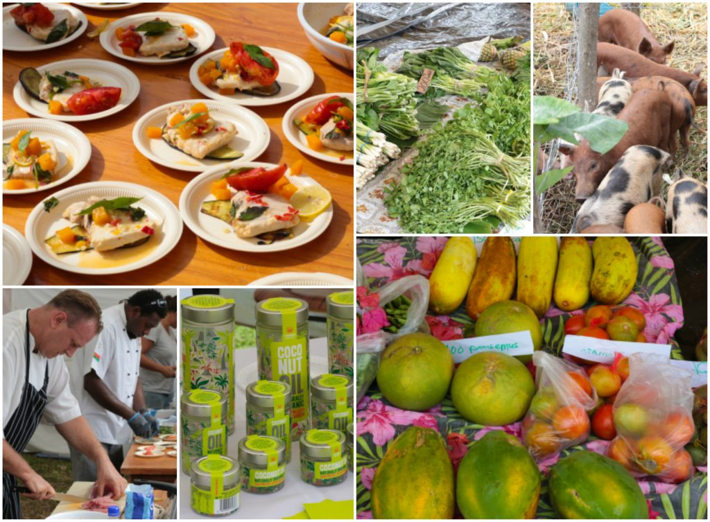
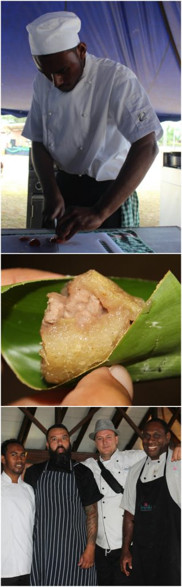

Bridging the gap between Agriculture, Tourism in the Pacific
- Regional agritourism agenda given recognition by Pacific Ministers of Agriculture and Tourism
. - Ministers of Agriculture and Tourism adopt first Agritourism Development Recommendations
. - CTA, PIPSO, SPTO, SPC and partners to continue agritourism collaboration in the Pacific
. - Agritourism Policy Setting Workshops scheduled for the Solomon Islands and Fiji
Momentum builds for Regional Agritourism Development in the Pacific
Pacific Agriculture and Tourism leaders welcomed strong partnerships and cooperation in favour of agritourism development in the region, hearkening a new chapter in the push for sustainable, inclusive and resilient economic development in the Pacific. Support from the Technical Centre for Agricultural and Rural Cooperation (CTA), the Pacific Island Private Sector Organisation (PIPSO), the South Pacific Tourism Organisation (SPTO), the International Fund for Agricultural Development (IFAD), the Pacific Community (SPC) and other partners, has contributed to an impressive level of progress in the Pacific agritourism agenda since activities began in 2014. It also marks a significant achievement by the Government of Vanuatu, which has spearheaded the push for improved linkages between the agriculture and tourism sectors the region.
An important milestone for regional agritourism was achieved when Pacific Ministers of Agriculture and Forestry Services (MOAFS) adopted for the first time a set of Recommendations on Agritourism Development. The Ministers were attending a regional meeting in Vanuatu on 20th October 2017, which concluded the inaugural Pacific Week of Agriculture taking place from 16th to 20th October 2017. These recommendations call for greater policy, market and technical support to deepen productive links between agriculture, tourism, and other sectors including trade. They highlight important opportunities in the Pacific linked to agritourism development, notably for agribusiness and tourism SMEs in terms of value addition, job creation and wealth generation.
“We are very happy with our engagement on agritourism policy-setting in the Pacific, which has led to significant changes in promoting local products and supporting local value chain actors”, says Isolina Boto, Manager at CTA and lead of the agritourism project.
- Local Condiments on Display at the Pacific Week of Agriculture 2017
- Local Soaps on Display at the Pacific Week of Agriculture 2017
For their part, the Ministers of Tourism attending the 27th South Pacific Tourism Organisation (SPTO) Council of Tourism Ministers on 25th of October in Vanuatu also adopted their first Recommendations on Agritourism. This represents a significant breakthrough, as never before have the Tourism Ministers placed agriculture on their agenda. They agreed to support planned regional and national activities for agritourism development in the Pacific, and gave their approval for SPTO to develop proposals and seek funding to support the development and promotion of food tourism in the Pacific.
“The Pacific region is endowed with natural resources, producing high quality fresh fruits, vegetables, root crops and produce that is healthy and organic” Chris Cocker, CEO of SPTO said, adding that these are “a key strength and a major success factor for agri-tourism”.
A Workshop on “New Opportunities in the Agritourism Sector in the Pacific” was held on 18th October during the Pacific Week of Agriculture, where best practices in policy and agribusiness development in the agritourism value chain were shared, and participants identified support that could move this agenda forward. Speakers included policymakers, agriculture and tourism representatives from Government and regional bodies, agribusiness entrepreneurs and other experts, who were joined by over 50 participants. Many important recommendations and lessons for both policymakers and the private sector in agriculture and tourism were raised. There was a broad consensus that a coherent strategy, together with an inclusive approach, are key to achieving success and realising opportunities from closer linkages between agriculture and tourism.
- Terry Adlington, Managing Director of Tanna Coffee Development and Chef Horace Evans, Home Café, Samoan Culinary Association
- Chris Cocker, CEO of SPTO at the Agritourism Workshop
Promoting Local Sourcing in the Tourism Value Chain
Increasing local sourcing is a top priority for the Pacific region, particularly in relation to the tourism sector which is a significant importer of food and other agricultural products. As such, the Recommendations call for investment in tools and skills which can deepen the linkages between agriculture and tourism, addressing supply and demand side constraints through investment in technology, infrastructure development, better policies, promotion of value addition and training for farmers and chefs.
The scale of revenue leakages caused by food imports is worth emphasising: according to an IFC Survey from 2014, up to 60% of the food imported for the tourism sector can be produced in Vanuatu. In response to this challenge, the Recommendations also highlight the need to improve the productive capacity of local and regional agribusinesses to serve the tourism market, and for tourism operators to also be able to seize opportunities in local supply chains.
Proudly Pacific: Branding and Development of Pacific Cuisine
Food tourism is a rapidly growing segment of the tourism market, and one which can present an important avenue for increased revenues for farmers and businesses. It is especially attractive for youth and women entrepreneurs due to its relatively low barriers to entry. Pacific Agriculture and Tourism Ministers have picked up on this, and their recommendations acknowledge the need to devise strategies which will help to differentiate and promote Pacific cuisine and foods at national and regional levels.
Three complementary activities to scale up the impact of Pacific cuisine were enumerated. First, improving quality, branding and visibility of Pacific food in order to stimulate demand, meet consumer expectations, and also encourage more value addition and transformation of agricultural products locally. Second, partnerships with Chefs to promote Pacific cuisines and increase their presence on menus in hotels, resorts and restaurants. Chefs need more professional training and education in relation to traditional Pacific foods, cooking methods and local sourcing. Greater institutional capacity is also needed to provide support and opportunities for chefs and food agro-processors e.g. through culinary alliances. Finally, coherent marketing of the Pacific as a culinary destination should be pursued. This should include scaling up opportunities to showcase Pacific foods (farmers markets, trade and sports events etc.), collaborating with strategic stakeholders (e.g. airlines, celebrated personalities, etc.), and investing in diversification to suit different consumer groups.
Scaling up successful approaches – the way forward
By adopting the Agritourism Recommendations, Pacific Ministers of Agriculture and Tourism have provided a valuable endorsement for stronger intersectoral linkages and agritourism development in the region. This is a welcome and encouraging outcome for CTA, PIPSO, SPTO, IFAD and SPC, who have been working with Pacific governments and other stakeholders in developing and implementing this agenda.
Further policy-related activities are foreseen within the framework of this collaboration. Two national consultative Agritourism Policy Setting Workshops are being planned for the end of 2017, scheduled to take place in the Solomon Islands and in Fiji. These will follow the successful model previously used in Vanuatu and Samoa, which brought together all key stakeholders in the agriculture, tourism, trade and health sectors, including government ministries, agribusinesses, agro-producers, chefs, farmers’ organisations and technical organisations. Discussions are underway for similar activities in Papua New Guinea, Tonga, Tuvalu, Kiribati, Cook Islands, Timor Leste and Palau for 2018.
An important step forward in the implementation of this dossier is the identification of suitable projects and funding opportunities that will contribute to the agritourism objectives, for which approval was granted by the Pacific Ministers of Tourism.

Resources and Information
- Pacific Week of Agriculture Agritourism Recommendations to Pacific Ministers of Agriculture
- Agritourism Recommendations to Pacific Ministers of Tourism
- First Pacific Week of Agriculture 2017
http://www.pacificweekofagriculture.com/
- Find out about the Solomon Islands Agritourism Policy Setting Worskhop 2017
http://bit.ly/2Au7BhY
- Read CTA’s article on “Exploring innovations for promoting Pacific agriculture”
- Download the publication “Transforming food systems in the Pacific”
- Find out more about the Vanuatu Agritourism Policy Setting Workshop 2016
http://bit.ly/1TQTG6J
- Find out more about Samoa’s Agritourism Policy Setting Workshop 2016
- Recap : 1st Pacific Agribusiness Forum: Linking the Agrifood sector to the Tourism-related markets
http://bit.ly/27jasVT
- Recap : 2nd Pacific Agribusiness Forum: Linking the Agrifood sector to the local markets
- Visit the Chefs for Development Website
http://chefs4dev.org/
- Recap : Brussels Briefing 46: Agribusiness Development & Tourism Markets in SIDS
http://bit.ly/2dcZw9Z
BACKGROUND
 Regional solutions to common challenges in Pacific agriculture and tourism
Agritourism has rapidly gained attention in the Pacific as regional governments seek to capitalise on the benefits that stronger linkages between agricultural and tourism sectors can produce. For many Pacific islands, tourism is one of the biggest revenue earners – contributing to at least 12% of GDP and 13% of employment (2016, World Travel and Tourism Council). However, low domestic productivity and poor intersectoral linkages mean that most inputs and products that go into the tourism industry are imported. Agriculture is essential for the food security and livelihoods of most islanders, contributing 13% of GDP in the region (2015, World Bank) and sustaining a majority of the Pacific’s labour force, which is engaged in subsistence farming. Nevertheless, local foods and cuisine in the Pacific are facing tough competition against an abundance of cheap imported foods, that are highly processed and nutrient-poor. This has led to a rapid increase in the levels of obesity, heart disease and diabetes in this region, where non-communicable diseases are now the leading causes of mortality.
Agricultural production in the Pacific is weak, and small-scale farmer are burdened by the poor infrastructure, weak value chains, high costs of inputs and limited access to finance that characterise the sector. This makes it difficult to professionalise agriculture, so it has generally not been an attractive sector for youth or investors. Farmers struggle to access markets, including for the tourism and hospitality industries which are among the largest in the region.
Pacific Island policymakers have subsequently identified agritourism as an important way in which common challenges facing both sectors can be addressed. Agritourism development will help to create bridges between agriculture and tourism. It will engage the tourism industry to increase local sourcing, work with farmers and agribusinesses to improve their productive capacity, and also encourage greater visibility and consumption of Pacific foods. In the medium and long term, agritourism creates jobs and enhances the incomes of value chain actors, especially farmers and rural communities. Women and youth stand to benefit, as agritourism is a sector that is ripe for innovation and entrepreneurship, with relatively low barriers for entry and potential for significant gains.
Chefs4Dev: Engaging Chefs to Capitalise on Pacific Cuisine
The potential of Pacific food and gastronomy is highlighted in both Agritourism Recommendations adopted by the Ministers of Agriculture and the Ministers of Tourism. Work has already begun with local chefs to improve their skills in relation to local cuisine, with a special Chefs Training Programme on "Pacific Contemporary Island Cuisine" during the 2nd Pacific Agribusiness Forum (August 29th - September 1st 2016 in Apia, Samoa), and more recently, training of student Chefs as part of the Pacific Week of Agriculture.